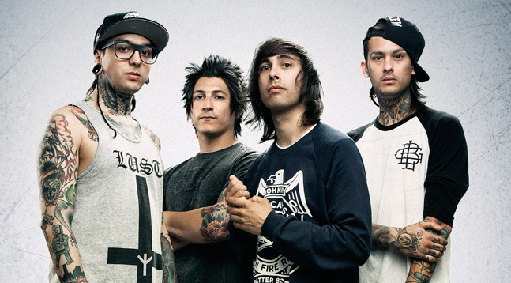

Pierce the Veil is a Post-hardcore band from San Diego, California. Formed in 2006, the band was founded by brothers Vic and Mike Fuentes. This band has became super popular in the United States and Mexico. One major thing they do is have crazy theatrics when they are the headliner.